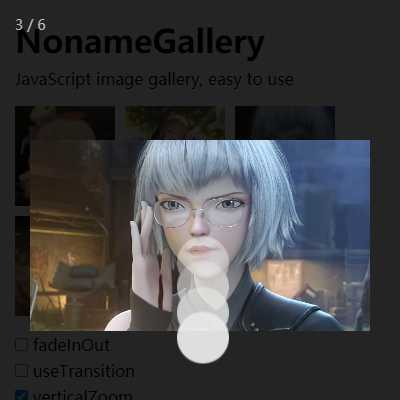

NonameGallery
基于JavaScript开发的图片预览插件，支持PC端和移动端，兼容主流浏览器，简单易用，零依赖。GitHub

- duration 300ms
手势支持
支持所有基本手势，包括单击关闭画廊，双击缩放图片，双指缩放图片，左右滑动切换图片。
双指放大图片
当用户两根手指分别向外扩展时，图片则会相应放大。最大放大尺寸会在图片实际宽高和图片预览宽高*1.5(用户可配置)两者中取较大值。
双指缩小图片
当用户两根手指分别向内收缩时，图片则会相应缩小。最小尺寸为图片预览宽高*0.7(系统默认值)。
水平滑动切换图片
当用户单个手指水平滑动距离超过屏幕宽度*0.1时，则会切换图片。如果图片为放大状态且宽度大于屏幕宽度，则需要先滑动到图片边界。

垂直滑动关闭画廊
当用户单个手指垂直滑动距离超过屏幕高度*0.15时，会关闭画廊，如果图片为放大状态，则会响应拖动查看图片事件。
PC端如何操作
PC端操作基本类似，支持单击关闭画廊，点击图片缩放，增加键盘控制，ESC关闭画廊，方向键切换图片。